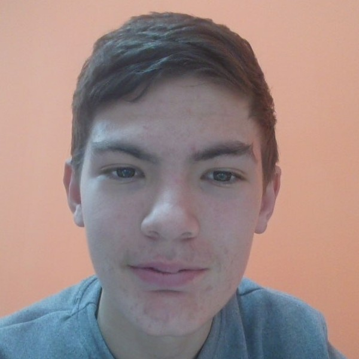

Men haqimda.
Salom! Mening ismim Alimardon Mirzaboyev. Men 2011-yil 15-noyabrda Olmaliq shahrida tug‘ilganman. Hozirda dasturlash olamiga ilk qadamlarimni PDP Juniorning Frontend yo'nalishida tashlayapman.
Dasturlash men uchun shunchaki kod yozish emas, balki murakkab muammolarga kreativ va raqamli yechimlar topish san'atidir. Oxirgi 3 oy davomida men veb-texnologiyalarning asosi bo‘lgan HTML va CSS yordamida loyihalar yaratishni, zamonaviy dizayn trendlarini va kodni toza yozishni o‘rgandim. Ushbu taqdim etayotgan loyiham — mening shu vaqt ichida orttirgan bilimlarim va mehnatim mahsulidir.

0
1
0
1
1
0
0
1
- Ta'lim: Maktabni bitirgach, dunyoning eng nufuzli texnologik oliygohlaridan biri — Janubiy Koreyaning KAIST universitetiga o‘qishga kirish.
- Professional o'sish: Naqat frontend, balki murakkab tizimlarni yarata oladigan darajadagi muhandis bo'lib yetishish.
- Til o'rganish: Hozirda dasturlash bilan bir qatorda koreys tili va ingliz tili ustida jiddiy ishlayapman.